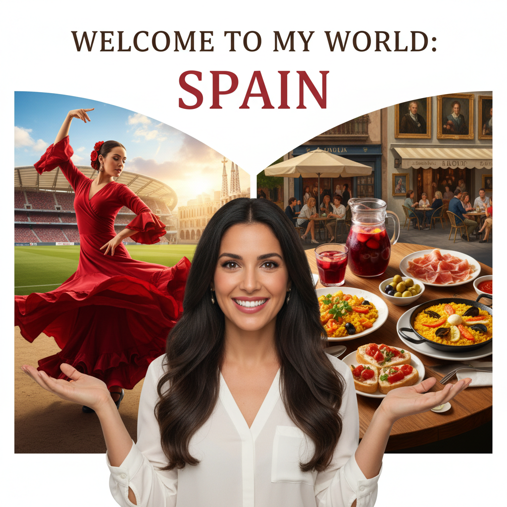

Unit 1: Unity in Diversity
THE WAY WE LOOK
Have you ever thought about why we look the way we do? What makes some people’s hair curly and others’ straight? Why is some people’s skin dark and others’ light? These are some of the questions we asked Ms. Susan Franz, an anthropologist, who talked to us about people and their characteristics.
The Interview
Interviewer: Ms. Franz, why do people around the world look so different?
Ms. Franz: Well, think about the countries we live in. They differ greatly in terrain, temperature, altitude and vegetation. Yet, people have managed to make homes almost everywhere: barren, rocky mountain tops, icy, freezing plains, wet marshes, scorching deserts. The people living in these different places have slowly become very different from each other. Their skin colour, the shape and size of their bodies and their characteristics have evolved over the years to suit their surroundings.
Interviewer: Can you give us some examples?
Ms. Franz: Of course. A good example is skin colour. Scientists think that dark skins – which are rich in a substance called melanin – offer good protection against the burning rays of the sun. Very dark, curly hair also offers good insulation from the sun and heat. In northern countries, where the rays of the sun are weaker, people don’t need dark skin. Their pale complexion allows the skin to absorb the sun’s rays easily in order to make vitamin D.
Interviewer: Facial characteristics are also very different. Why?
Ms. Franz: Well, the key word here again is ‘adaptation’. In extremely cold weather, ears and noses are often the first parts of the body to suffer from frostbite. That’s why people who live in very cold temperatures have facial characteristics that help them survive the harsh weather. Their faces are flat, and their noses are also small and flat. They also have an extra layer of fat in their eyelids which gives them slanted eyes.
Interviewer: That’s very interesting! What about body size and height?
Ms. Franz: Well, again scientists have found that people who live in hot, dry climates are often tall and thin. This lean type of body helps heat escape more quickly. People from cold regions, on the other hand, tend to have more sturdy bodies, covered by a layer of protective fat.
Interviewer: So, if we move to a northern country, will our skin become pale?
Ms. Franz: Of course not! People’s bodies have slowly changed over thousands of years. Who knows what we will look like ten thousand years from now!...
Check Your Understanding
-
What is the main theme of the interview with Ms. Franz?
-
What is the function of melanin in the skin?
-
Why do people in very cold climates often have flat faces and small noses?
-
What body type is common for people living in hot, dry climates?
-
According to the text, what gives some people slanted eyes?
-
What advantage does pale skin offer in northern countries?
-
How quickly do these adaptations happen?
-
Which word does Ms. Franz use as the "key word" for why people look different?
-
Besides protection, what does dark, curly hair offer?
-
Why is a tall, thin body type advantageous in hot climates?
Exercise 1.1: Match the Words with Their Meanings
Drag the words from the box and drop them next to their correct meaning.
Exercise 1.2: Complete the Sentences
Choose the correct word from the dropdown list to complete each sentence.
- 1. Dry sand can water.
- 2. Evolution occurs as a result of to new environments.
- 3. It's important that buildings should fit in with their .
- 4. We are now flying at an of 10,000 metres.
- 5. Plants and animals over millions of years to suit their environment.
- 6. Animals' thick fur provides very good against the arctic cold.
Exercise 1.3: Categorize the Words
Drag the words from the box and drop them into the correct category.
Age
Body
Hair
Face
Skin
Nose
Mouth
Eyes
Exercise 1.4: Adjective Derivatives
Click a positive word to reveal its opposite. Then click the negative word to reveal the corresponding nouns.
| Positive Adjective | Negative Adjective | Corresponding Nouns |
|---|---|---|
| modest | ||
| generous | ||
| polite | ||
| honest | ||
| patient | ||
| hard-working | ||
| cheerful | ||
| calm | ||
| sociable | ||
| sensitive |
Welcome to my world üåç
Listen to Maria Dolores talk about her country, then tick all the correct items in the table below.
A glimpse into my country
üáØüáµ Yoko from Japan
Hello everyone! I'm Yoko. I'm from Tokyo, the capital city of Japan. The customsMeaning: A traditional way of behaving specific to a society.
Example: Taking off your shoes indoors is a Japanese custom. of my country are somewhat different from those of the countries of the West. For example, we bowMeaning: To bend your head or body forward as a sign of respect or greeting.
Example: We bow to greet someone in Japan. to greet someone and we don't like standing too close to each other. If you say 'Ohayō gozaimasu' to someone, you mean 'Good morning', and we young people often say 'Genki?' which means 'Are you well?'. Body language is very important, too. If you shake your hand from side to side, you mean 'no' and pointing to your nose means 'me'.
You all know traditional Japanese dishes such as sushiMeaning: A dish of vinegared rice combined with other ingredients like seafood and vegetables.
Example: We had sushi for dinner last night., tempuraMeaning: A dish of seafood or vegetables that have been battered and deep-fried.
Example: The shrimp tempura was light and crispy. and noodles and you probably know that we use chopsticksMeaning: A pair of small, thin sticks used for eating in many Asian countries.
Example: It takes practice to become skilled with chopsticks. to eat our meals. We eat sitting on mats on the floor; therefore, our floors have to be very clean. To keep them clean, we always take off our shoes and change into special slippers when we enter the house.
Sports that are very popular in Japan include judoMeaning: A modern martial art focused on throws and grappling.
Example: He is a black belt in judo., kendoMeaning: A martial art using bamboo swords and protective armour.
Example: Kendo requires discipline and focus., karateMeaning: A martial art that uses punching, kicking, and blocking techniques.
Example: She practices karate for self-defense. and sumo wrestlingMeaning: Japan's national sport, where two wrestlers try to force each other out of a ring.
Example: Sumo wrestling has a history of over 1,000 years., our national sport, which has a history of more than 1,000 years! Young people also enjoy baseball, football, volleyball and tennis. Finally, two forms of traditional Japanese theatre, NohMeaning: A classical form of Japanese musical drama with masked actors.
Example: A Noh performance can be very slow and symbolic. and KabukiMeaning: A classical Japanese dance-drama known for its dramatic style and elaborate make-up.
Example: Kabuki actors often wear striking costumes., continue to thrive in my country today.
üá´üá∑ Pierre from France
'Salut', I'm Pierre and I'm from Paris, the capital city of France! In my country we say 'Bonjour' for 'Good morning' and 'Comment allez-vous?' for 'How are you?'. Like Spanish people, when we greet each other, we shake hands and usually kiss 3 times!
We're one of the largest producersMeaning: A person, company, or country that makes or grows goods for sale.
Example: France is a major producer of wine and cheese. of wine in the world and famous for our 'haute cuisineMeaning: High-quality cooking, especially in the traditional French style.
Example: That restaurant is known for its exquisite haute cuisine.'. One taste of a crêpeMeaning: A very thin pancake that can be filled with sweet or savoury ingredients.
Example: I love a warm crêpe with Nutella and bananas. or a croissantMeaning: A buttery, flaky, crescent-shaped pastry.
Example: A fresh croissant is a perfect start to the day in Paris., and you'll never forget it!
The French love doing sport and keeping fit. Some of the most popular sports in my country are football, cycling, skiing, tennis and pétanqueMeaning: A traditional game where players throw metal balls to get as close as possible to a small wooden ball.
Example: We spent the afternoon playing pétanque in the park. - a traditional game played with metal balls.
Culture and the arts are extremely important in our everyday life. We celebrate local festivals through music and dance throughout the year. We also appreciate a visit to the theatre, the opera or the many famous museums, such as the LouvreMeaning: The world's largest art museum and a historic monument in Paris.
Example: You can see the Mona Lisa at the Louvre., home to the world-famous painting 'Mona Lisa', or the Orsay museum to admire the paintings of Renoir, Monet and Degas, some of the greatest ImpressionistMeaning: Relating to a 19th-century art movement that used visible brush strokes to show the changing effects of light.
Example: Monet is one of the most famous Impressionist artists. artists....
Cultural Aspects Comparison
Click on a category to reveal the comparison.
| Cultural Aspect | üáØüáµ Japan (Yoko) | üá´üá∑ France (Pierre) |
|---|---|---|
| Greetings & Customs + | Bowing, specific phrases ('Ohayō gozaimasu'), maintaining personal space, body language (hand gestures), and removing shoes indoors. |
Shaking hands, kissing on the cheeks, and specific phrases ('Bonjour'). |
| Food + | Sushi, tempura, noodles. Eating with chopsticks while sitting on mats on the floor. |
'Haute cuisine', crêpes, croissants, and wine production. |
| Sports + | Traditional sports like judo, kendo, karate, and sumo wrestling. Also popular are baseball, football, volleyball, and tennis. |
Football, cycling, skiing, tennis. A traditional game called pétanque. |
| Arts & Entertainment + | Traditional theatre forms like Noh and Kabuki. |
Local festivals with music and dance. Visits to the theatre, opera, and famous museums like the Louvre. |
Amazing Structures
The texts below come from an article about remarkableRemarkable (adj.): unusual or special and therefore surprising and worth mentioning.
Example: The view from the top of the mountain was remarkable. buildings. Read them and complete the table.
Agia Sophia

The "Church of Holy Wisdom", also called Agia Sophia, is in Constantinople - now Istanbul. It was built by the emperorEmperor (n.): the ruler of an empire.
Example: The Roman emperor lived in a large palace. Justinian after the riotsRiots (n.): a situation where a large group of people behave in a violent and uncontrolled way.
Example: The city experienced riots after the controversial decision. of AD 532. Anthemios and Isidoros were two of the Greek architectsArchitects (n.): people who design buildings.
Example: The architect showed us the plans for our new house. who designed it. It took six years to build and about ten thousand men worked on it. The first stone of the foundationsFoundations (n.): the structures below the ground that support a building.
Example: A strong foundation is necessary for a tall building. was laid by the emperor himself.
The building had brick walls, marble liningsLinings (n.): a layer of material covering the inside surface of something.
Example: The jacket has a warm, soft lining. inside, amazing mosaicsMosaics (n.): pictures made by arranging together small colored pieces of stone, tile, or glass.
Example: We saw beautiful ancient mosaics in the museum. made up of tiny cubesCubes (n.): solid objects with six square sides of equal size.
Example: She added two ice cubes to her drink. of coloured glass, marble or gold and massiveMassive (adj.): very large in size, amount, or number.
Example: The castle had massive stone walls. marble pillars. Of all its fascinating features, perhaps the most remarkable is its huge, shallow dome, supported on piersPiers (n.): strong, thick columns that support a bridge or roof.
Example: The bridge was supported by several concrete piers. made of limestoneLimestone (n.): a type of white rock used in building.
Example: Many old buildings are made of limestone.. There are also smaller half-domes around the largest, supported by archesArches (n.): curved structures that support weight from above.
Example: The old bridge has three beautiful stone arches. - a typical feature of ByzantineByzantine (adj.):): relating to the ancient empire of Byzantium.
Example: The museum has a collection of Byzantine art. design for big buildings. Agia Sophia is well over 45m high and over 60m long and wide. Today we are accustomed toAccustomed to (phr.): to be familiar with something.
Example: I'm not accustomed to such cold weather. seeing buildings as large as this, but in Justinian's time, it must have been truly awe-inspiringAwe-inspiring (adj.): causing you to feel great respect or admiration.
Example: The Grand Canyon is an awe-inspiring sight..
The Leaning Tower of Pisa
The famous Leaning Tower of Pisa is the bell tower of the cathedralCathedral (n.): the main church of an area, led by a bishop.
Example: The city's cathedral is a major tourist attraction. in the city of Pisa, in Italy. Its height is 55.8m, it has 8 storeysStoreys (n.): the floors or levels of a building.
Example: My office is on the third storey. and there are 294 steps to the top. ConstructionConstruction (n.): the process of building things like houses, roads, etc.
Example: The construction of the new road will take two years. began in 1173 and it took 200 years to complete. The architect's identity is still unknown, but we know he designed the tower to be verticalVertical (adj.): standing or pointing straight up.
Example: The cliff face is almost vertical..
After the third floor was built, the tower started to leanLean (v.): to be at an angle and not straight.
Example: The old tree leans to one side. because its foundation was shallowShallow (adj.): not deep.
Example: The kids were playing in the shallow end of the pool. and in weak soil. The Pisans stopped construction twice for almost 100 years each time. In 1372, the tower was completed and seven bells were installed. Over the years, there have been many attempts to straightenStraighten (v.): to make something straight.
Example: He tried to straighten the bent key. it or haltHalt (v.): to stop moving or happening.
Example: The police officer halted the traffic. the leaning. Some attempts had the opposite result and the tower sankSank (v.): past tense of 'sink'; to go down below the surface of something.
Example: The ship sank after hitting an iceberg. further into the soil. The latest attempt was completed in 2001, and the tower has been declaredDeclared (v.): announced something publicly or officially.
Example: The government declared a state of emergency. stableStable (adj.): not likely to move, fall, or change.
Example: After the repairs, the building is now stable. for at least another 300 years.
The Sydney Opera House
The Sydney Opera House is located in Sydney, Australia, and is one of the most distinctiveDistinctive (adj.): easy to recognize because it is different from other things.
Example: The bird has a distinctive red mark on its head. and famous 20th century buildings. It is also one of the world's most famous performing arts venuesVenues (n.): places where events like concerts or meetings happen.
Example: The stadium is a popular venue for concerts. and has become a symbolSymbol (n.): a sign or object used to represent something else.
Example: The dove is a symbol of peace. of Sydney.
Designed by Danish architect Jørn Utzon, it reaches out into Sydney HarbourHarbour (n.): an area of water next to the coast where ships can stay in safety.
Example: We watched the boats in the harbour. and its spectacularSpectacular (adj.): very exciting to look at; amazing.
Example: There was a spectacular fireworks display. roof reminds us of a moving ship at full sailSail (n.): a large piece of cloth on a boat that catches wind to make it move.
Example: The ship looked beautiful with its white sails.. Construction began in 1959 and was completed in 1973. It is very large ($183\text{m} \times 120\text{m}$) and is supported on 580 concreteConcrete (n.): a hard building material made by mixing sand, cement, and water.
Example: The sidewalk is made of concrete. piers. The roofs are constructed of over a million white graniteGranite (n.): a very hard rock, used for building.
Example: The kitchen counter is made of polished granite. tilesTiles (n.): flat, thin pieces of baked clay, plastic, etc. used for covering roofs or floors.
Example: The bathroom walls are covered in white tiles. and the interiorInterior (n.): the inside part of something.
Example: The interior of the house was beautifully decorated. is composed ofComposed of (phr.): to be formed from various things.
Example: The team is composed of players from all over the country. pink granite and wood. It has about 1,000 rooms, 5 theatres, and a multitudeMultitude (n.): a very large number of people or things.
Example: A multitude of birds flew overhead. of restaurants and shops. You've probably seen this breathtakingBreathtaking (adj.): extremely exciting, beautiful, or surprising.
Example: The view from the top was breathtaking. structure featuredFeatured (v.): included as an important part of something.
Example: The actor was featured in several successful films. in films such as "Mission Impossible II" and "Finding Nemo".
Building Facts
Click on a question to reveal the answers.
| Question | Agia Sophia | The Tower of Pisa | The Sydney Opera House |
|---|---|---|---|
| a) Where is it? | Istanbul, Turkey | Pisa, Italy | Sydney, Australia |
| b) How old is it? | Built after AD 532. | Construction began in 1173. | Completed in 1973. |
| c) Who designed it? | Anthemios and Isidoros | The architect is unknown. | Jørn Utzon |
| d) What is its most striking feature? | Its huge, shallow dome. | The fact that it leans. | The roof, which looks like sails. |
Interactive English Exercises
How to complete the exercises:
This is a tap-to-place activity (not drag-and-drop).
1. Tap a word or image from its box to select it.
2. Tap an empty answer space to place the selected item.
3. To move an item you've already placed, just tap it to send it back to the box.
Exercise 1: Time for games!
Complete the text with the verbs from the box in the appropriate form.
Everyone (1) playing games especially children! (2) outdoor games, indoor games or board games? (3) hopscotch or marbles in the playground?
Look at this young boy... He (4) hopscotch. He (5) from one end of the grid to the other.
Look at these children. They (6) their marbles... If they hit the other marbles, they (7) them.
Puzzles, jigsaws and crosswords... They (8) strength but a lively mind. Tangrams... They (9) of a square cut into seven pieces.
People of all ages (10) playing chess. Most people (11) it is a difficult game... Nowadays, more and more people (12) an interest in computer games.
Exercise 2: Building Vocabulary
A.
(1) are used to (2) the roof or the (3) of a building. They are often made of (4) or stone and they give ancient Greek and Roman buildings their (5) look.
B.
The (1) of the Colosseum was completed... it is one of Rome's most amazing (2) . It had four (3) ... we can see the (4) and the underground passages where cages had been (5) to keep the animals...
C.
Another (1) structure is Stonehenge... constructed of many heavy stone (2) . Although some stones... (3) against each other, the monument is very (4) . Scientists have made many (5) to understand how the stone pillars came to be vertical.
Exercise 3: Types of Accommodation
Exercise 4: Complete with adjectives
1. Mexico City is (big) and (noisy) than Los Angeles.
2. The traffic in Bangkok is even (bad) than that of Athens!
3. The 'bullet train' in Japan is (fast) train in the world.
4. In some countries, Chinese food is much (popular) than Mexican food.
5. The Maracana stadium... can seat (many) spectators...
6. Oxford is not (old) as London and Cambridge.
7. You can get the (good) view of Paris from the Eiffel Tower.
8. The world's (high) restaurant is in the CN Tower...
9. St. Basil's cathedral... is one of (colourful) buildings in the world.
10. Sometimes it costs (much) money to restore a damaged building...
Exercise 5: Cross out the extra word
Click on the extra word in each sentence to cross it out.
1. China is a more larger country than India.
2. English food is not as popular as than Japanese.
3. Spanish people are the more interested in football than French people.
4. This country is the most hospitable than in Europe.
5. This building is as less impressive than the Colosseum.
6. The Japanese are much polite people.
7. The Parthenon is not as much high as the Pyramids.
Exercise 6: Complete with adjectives
1. The Great Sphinx is (old) and (large) statue in the world.
2. The world's (famous) statue of Jesus is in Rio de Janeiro...
3. The Colossi of Memnon are not (tall) as the Bamian Buddah.
4. Although 'Motherland Calls' is (tall) statue in the world today, it is not (famous) as others.